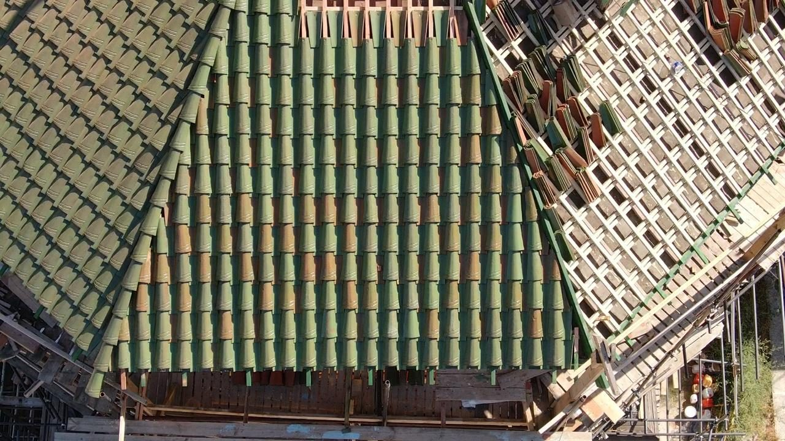
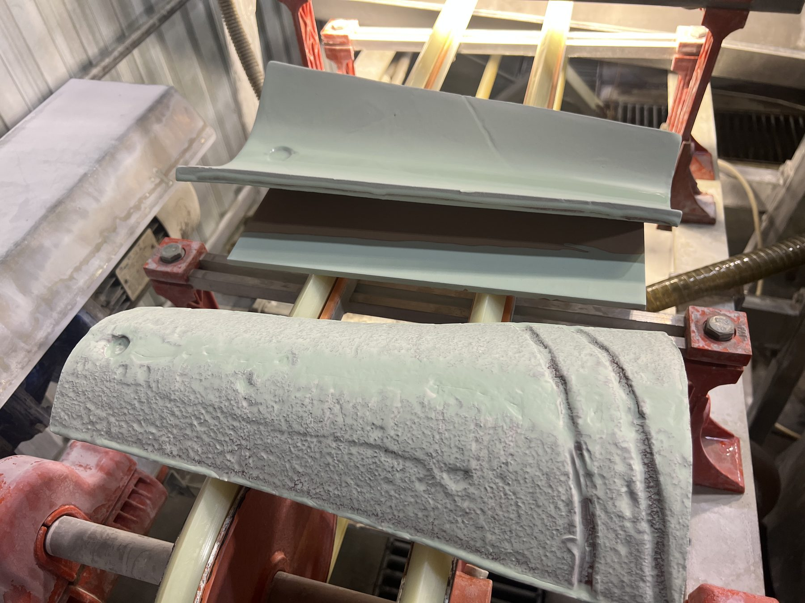
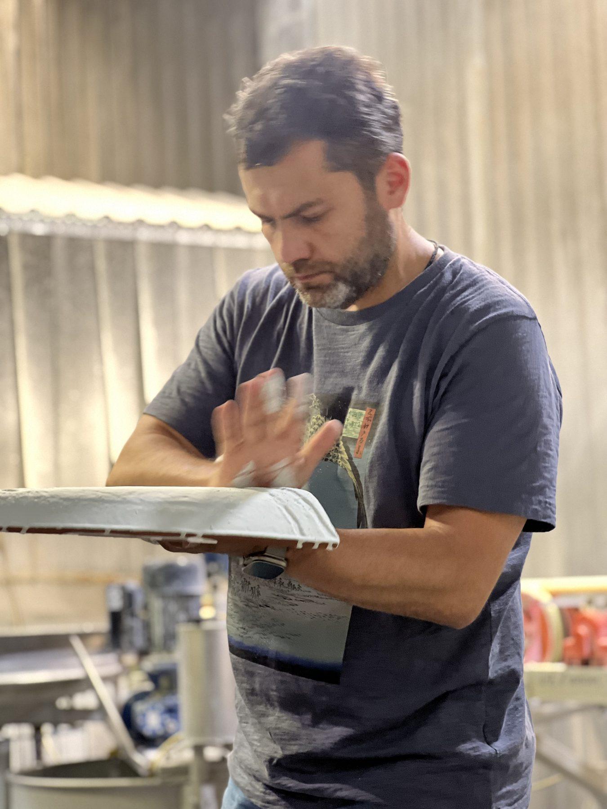

Керамическая черепица для Ханского дворца в Бахчисарае

Для Ханского дворца в Бахчисарае «Паллада» изготовила керамическую черепицу по историческим образцам.
Задача
Требовалось воспроизвести не только форму элементов, но и неровную рукомятную поверхность и сложный зелёный цвет старой кровли. Историческая черепица изготовлена из красной глины: терракотовый черепок просвечивает сквозь глазурь и влияет на её оттенок.
Испытания образцов
Натурные испытания образцов в течение шести месяцев выявили потемнение поверхности и растрескивание покрытия из-за несовместимости глазури и керамической массы.
Подбор глазури
Специалисты «Паллады» подобрали новый состав глазури, совместимый с красным черепком и близкий по цвету к подлинной черепице. Сочетание двух оттенков зелёного, полупрозрачной глазури и естественного цвета глины позволило получить живую, неоднородную поверхность без эффекта однотонной современной кровли.
Производство
Каждый элемент формовали вручную. Полный производственный цикл включал подготовку керамической массы, формовку, сушку, утельный обжиг, глазурование и повторный обжиг. Для равномерного нанесения глазури на вогнутые и выпуклые детали использовали специальные установки.
Где установлена
Изготовленная «Палладой» черепица предназначалась для Библиотечного и Конюшенного корпусов и Соколиной башни. Подобранные материалы прошли натурные испытания до начала основного производства.
Как делали черепицу

